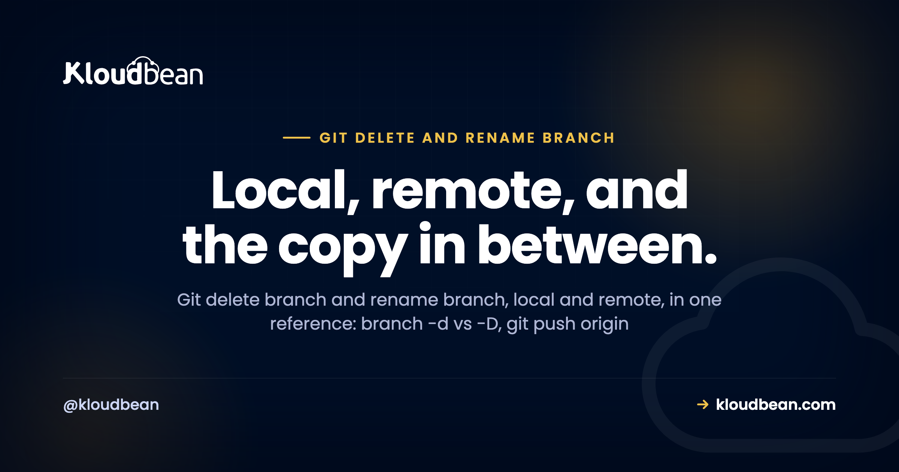

Git Delete Branch and Rename Branch: Local and Remote, One Reference

Search git delete branch and you get a dozen answers for one narrow case, none of which mention the remote, the rename, or the teammate whose afternoon you just complicated. This is the whole family in one page. Deleting and renaming branches, local and remote, with the exact commands and the reasons behind each one. Read the first section and the rest of it stops feeling like guesswork.
To delete a local branch, run git branch -d name, or -D to force one that is not merged. To delete a remote branch, run git push origin --delete name. To rename locally, use git branch -m old new. There is no remote rename: push the new name, delete the old one, then reset tracking with git push -u origin new. Prune leftovers with git fetch --prune.
The three things Git calls a branch
Almost every branch mistake comes from one confusion: the word branch means three different things, and they live in three different places. Get these straight and delete, rename, push, and prune all stop being scary.
A local branch is a movable pointer to a commit on your own machine. It is what you check out, edit, and commit to. It is cheap, really just a small file under .git/refs/heads/, and creating or deleting one changes nothing for anyone else.
A remote branch is the branch that lives on the remote, for example on GitHub or GitLab. It only changes when someone pushes to it or deletes it. It is shared. That is the one that touches other people.
A remote-tracking ref, written like origin/feature, is the one that trips everyone up. It is a read-only copy on your machine that records where the remote branch was the last time you talked to the remote. It does not update live. git fetch refreshes it. So origin/feature can point at a branch that was deleted on the remote an hour ago and keep pointing there until you fetch with pruning.
Once you see those as three separate objects, the commands line up. Deleting a local branch touches only the first. Deleting a remote branch is a push that touches the second. Cleaning up the stale third is exactly what git fetch --prune is for.
Delete a local branch
To delete a local branch, first switch to a different branch, because Git will not let you delete the branch you are currently standing on. Then use git branch -d.
# move off the branch first
git switch main
# delete a branch that is already merged (safe)
git branch -d old-feature
# force-delete a branch even if it is not merged
git branch -D old-featureThe lowercase -d is the safe one. It refuses to delete a branch whose commits are not merged into the branch you are on, so it will not quietly throw away work. If Git stops you with a warning that the branch is not fully merged, that is the safety net doing its job, not an error to bulldoze past.
The uppercase -D is force. It deletes no matter the merge state. Reach for it when you genuinely want the commits gone, say an experiment you are abandoning, and you have read the warning and mean it.
| Command | What it does | When to use it |
|---|---|---|
git branch -d | Deletes only if the branch is merged | Your safe default. It protects unmerged work. |
git branch -D | Force deletes, merged or not | You are sure you want those commits gone. |
One reassuring fact: even -D rarely destroys work the instant you run it. The deleted commits sit in your reflog for a while, so git reflog can often help you recover a branch you dropped by mistake. Do not build a workflow on that, but do not panic either.
Delete a remote branch
Deleting your local copy does nothing to the remote. To remove the branch that lives on the remote, you push a deletion.
# the modern, readable form
git push origin --delete old-feature
# the older refspec form does exactly the same thing
git push origin :old-featureBoth forms delete the same remote branch. The --delete form is easier to read and remember. The older colon form, git push origin :old-feature, literally means push nothing into that remote branch, which Git reads as delete it. You will still meet the colon form in old answers and scripts, so it is worth recognizing.
Because this is a push, you need write access to the remote. If the delete is rejected on permissions, the problem is your access, not the command. And deleting a shared branch deserves a pause: once it is gone it is gone for the whole team, so make sure the work is merged or genuinely unwanted first. One extra thing to check before you delete: whether anything automated is watching that branch. A deploy pipeline pointed at a branch that no longer exists doesn't complain, it just stops shipping, and nobody notices until someone asks why their merge isn't live. If a Kloudbean deployment is connected to that branch, deployment history and live build logs distinguish a missing push from a failed build.
Rename a local branch
Renaming a local branch is one command, git branch -m (the m is for move).
# rename the branch you are currently on
git branch -m new-name
# rename a branch you are not on: old name, then new name
git branch -m old-name new-nameIf you are already on the branch you want to rename, give -m a single argument, the new name. If you are somewhere else, give it two, the old name then the new name. That is the entire local story, and it happens instantly. Nothing leaves your machine yet.
The catch is that this rename does not reach the remote on its own, and it quietly breaks the branch's upstream link. So a local rename is only step one of a bigger job whenever that branch already exists on the remote, which is the next section.
Rename a remote branch (there is no direct command)
Here is the fact that catches people out: Git has no command to rename a branch on the remote. The remote understands only two moves, create a branch and delete a branch. A remote rename is really a create-the-new-name plus delete-the-old-name, done in the right order.
So renaming a branch that already lives on the remote is a four-step move:
# 1. rename it locally
git branch -m old-name new-name
# 2. push the new name and set it as the upstream
git push -u origin new-name
# 3. delete the old branch on the remote
git push origin --delete old-name
# 4. teammates (and you) prune the stale reference
git fetch --pruneStep by step: rename locally, push the new name and set it as upstream with -u, delete the old branch on the remote, and finally have everyone prune so the old origin/old-name reference disappears. If the old branch happens to be the default branch on GitHub or GitLab, change the default in the host settings first, otherwise the remote will refuse to delete it.
This is also where you remember that a rename, to anyone who already pulled, behaves like a delete plus a brand new branch. Their old branch keeps pointing at a name that no longer exists on the remote. Tell your teammates, or you will answer the same puzzled message a few times over.
Fix upstream tracking after a rename
Upstream tracking is the link that lets you type git push and git pull with no arguments and have Git know which remote branch you mean. A rename, or a delete-and-recreate, breaks that link. The symptom is Git complaining that the current branch has no upstream, or a push landing on the wrong name.
# see what each local branch is tracking
git branch -vv
# set (or reset) the upstream for the current branch
git push -u origin new-name
# or relink without pushing, if the remote branch already exists
git branch --set-upstream-to=origin/new-namegit branch -vv shows what each local branch is tracking, which is the quickest way to spot a broken or wrong link. To fix it, push once with -u (short for --set-upstream) to push and set the link in a single step. If the remote branch already exists and you only want to point at it, git branch --set-upstream-to does that without a push. After either, plain git push and git pull work again.
Prune remote-tracking refs that no longer exist
When a branch is deleted on the remote, your machine does not find out on its own. Your origin/that-branch reference lingers, which is why git branch -r keeps listing branches a colleague deleted last week.
# remove remote-tracking refs whose remote branch is gone
git fetch --prune
# find local branches already merged into main (safe cleanup)
git branch --merged maingit fetch --prune fetches and, in the same pass, removes any remote-tracking refs whose remote branch has disappeared. Run it and the ghosts vanish. If you want that behavior every time, set fetch.prune to true in your Git config so a plain git fetch always prunes. Pair it with git branch --merged to find local branches that are fully merged and safe to delete, which is the usual tidy-up.
What a delete or rename does to your teammates
Local operations are private. Anything that touches the remote is not, and this is the part worth slowing down for.
Deleting a remote branch removes it for everyone. If a teammate was working from it and had not pushed, their local copy survives, but the shared reference they were pushing to is gone, and their next push may recreate it or fail depending on their setup. Renaming a remote branch, because it is a delete plus a create, has the same effect: to a colleague the old name simply vanished and a new one appeared.
Force-pushing is the sharpest edge of all. If you rewrite history on a shared branch and force-push, anyone who already pulled now has a diverged copy, and merging it back can drag in the very commits you tried to remove. The safer habit on shared branches is git push --force-with-lease instead of a bare --force, because it refuses to overwrite work you have not seen yet. Better still, avoid rewriting shared history at all unless the whole team agreed to it.
The short version. Private branch, do what you like. Shared branch, talk first.
Every command in one table
Bookmark this. It is the whole family in one grid, with concrete example names you can swap for your own.
| Task | Command |
|---|---|
| Delete a merged local branch | git branch -d old-feature |
| Force-delete an unmerged local branch | git branch -D old-feature |
| Delete a remote branch | git push origin --delete old-feature |
| Rename the branch you are on | git branch -m new-name |
| Rename another local branch | git branch -m old-name new-name |
| Push a renamed branch and set upstream | git push -u origin new-name |
| Relink upstream without pushing | git branch --set-upstream-to=origin/new-name |
| Prune stale remote-tracking refs | git fetch --prune |
| See what each branch tracks | git branch -vv |
| List local / remote branches | git branch / git branch -r |
| List merged (cleanup candidates) | git branch --merged main |
If you only keep two rules from all of this: lowercase deletes safely and uppercase forces, and there is no remote rename, only push-new then delete-old.
The one time a branch name isn't just a label
Branch names stop being harmless the moment continuous deployment is watching one. The branch a pipeline watches is the branch that ships. Rename or delete it and the deploy doesn't error, it goes quiet, and a stale preview environment can sit there pointing at a ref that no longer exists.
So three habits carry over from everything above: prune dead branches, keep the deploy branch's name stable, and reset upstream tracking after a rename so pushes land where the pipeline is listening. Whatever runs your deploys, treat the branch name as a contract with it. On Kloudbean's managed CI/CD the branch you connect is exactly that contract, and deployment history plus live build logs are how you tell "nothing was pushed" apart from "the build failed", which is the question a renamed branch usually creates. Setup mechanics are in CI/CD that auto-deploys from GitHub and deploying a Node app to managed cloud. Since a remote delete is a push, it uses the same SSH key access as any other, and per-branch preview environments carry their own config, which is where environment variables done right earns its keep.
Being straight about the scope, though: this is a Git article, and Git is where the fix lives. No host recovers a force-pushed history or resurrects an unmerged branch you force-deleted. That's git reflog on whichever machine still has the objects, and if nobody has them, they're gone. A deploy platform's job here is narrow and worth exactly what it is: making it obvious which branch is live and what the last push did.
Own the server. Skip the server admin.
Servers, managed databases, object storage, and a built-in load balancer live behind one login, on the cloud and region you pick. The stack, SSL, patching, and backups are handled for you.
- ✓ Seven cloud providers
- ✓ Managed databases
- ✓ Object storage
- ✓ Automatic backups
- ✓ Free SSL
- ✓ Git deploy
- ✓ Free migration assistance
Plans from $8/mo · Free migration assistance · Free trial
FAQ
How do I delete a local Git branch?
Switch to another branch first, since Git will not let you delete the branch you are on, then run git branch -d followed by the branch name. The lowercase -d only deletes a branch whose work is already merged, which protects you from losing commits. Use git branch -D to force the deletion when you are certain.
What is the difference between git branch -d and -D?
Lowercase -d is the safe delete. It refuses to remove a branch that has commits not merged into your current branch. Uppercase -D forces the delete regardless of merge state. Use -d by default and reach for -D only when you truly want to discard unmerged work.
How do I delete a remote branch?
Push a deletion with git push origin --delete followed by the branch name. The older form git push origin :branch-name does the same thing. Because it is a push you need write access to the remote, and the branch disappears for everyone once you run it.
How do I rename a local branch?
Use git branch -m. If you are on the branch, pass just the new name. If you are on a different branch, pass the old name then the new name. The rename is instant and local, and it does not touch the remote or update tracking on its own.
Can I rename a remote branch directly?
No. Git has no command that renames a branch on the remote. You rename it locally, push the new name with git push -u, delete the old remote branch with git push origin --delete, and then everyone prunes. If the branch is the default on GitHub, change the default in settings before deleting the old one.
Why does my deleted branch still show up in git branch -r?
Because git branch -r lists remote-tracking refs, which are a cached copy on your machine, not the live remote. When someone deletes a branch on the remote, your cache keeps it until you refresh. Run git fetch --prune to remove remote-tracking refs whose remote branch no longer exists.
How do I fix the upstream after renaming a branch?
Renaming breaks the tracking link, so a plain git push stops knowing where to go. Push once with git push -u origin new-name to push and set the upstream together. To relink without pushing, use git branch --set-upstream-to=origin/new-name. Check the result with git branch -vv.
Does deleting or force-pushing a branch affect my teammates?
Deleting a remote branch removes it for everyone, and renaming one looks like a delete plus a new branch to them. Force-pushing rewritten history is the riskiest, since anyone who already pulled ends up with a diverged copy. Prefer git push --force-with-lease on shared branches and tell the team before rewriting history.
How do I delete a branch on GitHub?
You can delete it from the GitHub web interface on the branches page, or from your terminal with git push origin --delete followed by the branch name. Both remove the same remote branch. After a merged pull request, GitHub also shows a delete branch button on the pull request itself.